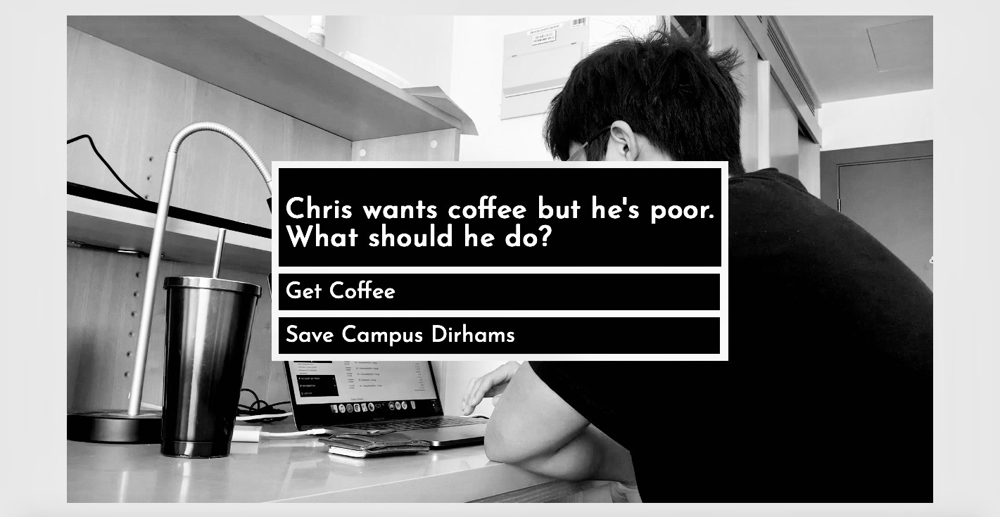

Home
About
30MFF
Comic Strip
Sound
Video
Video

Impromptu
What happens when decisions become programmed
in cycles of events, trapped into routine, loading for its
next turn? Can we really break free from the choices
we make in our life and change what lies beyond in
store for us?
Inspiration